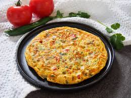
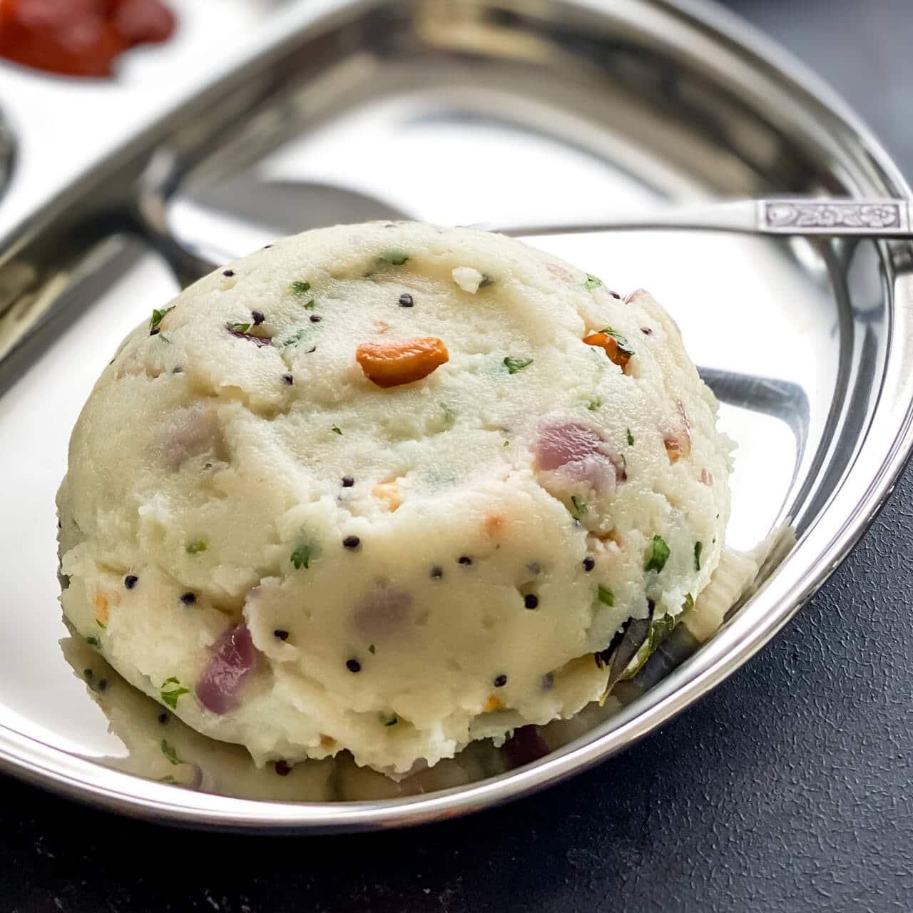
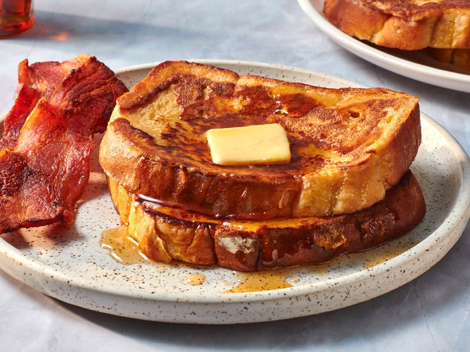
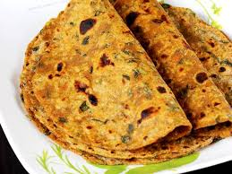

Fresh Start (Breakfast)
Healthy & hearty breakfast and brunch ideas

Masala Omelette
Ingredients :
- 2 eggs
- 1 small onion, finely chopped
- 1 small tomato, finely chopped
- 1 green chili, finely chopped (optional)
- 1 tbsp coriander leaves, chopped
- Salt to taste
- 1/4 tsp black pepper powder
- 1 tbsp oil or butter
Making Process :
- Crack the eggs into a bowl and whisk well with salt and pepper.
- Add chopped onion, tomato, green chili, and coriander leaves. Mix.
- Heat oil/butter in a non-stick pan on medium flame.
- Pour the egg mixture evenly in the pan.
- Cook until the base sets and edges turn golden
- Flip gently and cook the other side for 1-2 minutes.
- Serve hot with bread or toast.

Idli Upma
Ingredients :
- 1 cup leftover idlis, crumbled
- 1 tbsp oil
- 1 tsp mustard seeds
- 1-2 dried red chilies
- 1/2 tsp urad dal (optional)
- Salt to taste
- 1 small onion, finely chopped
- 1 green chili, chopped
- 8-10 curry leaves
- 1 tbsp coriander leaves, chopped
- 1 tsp lemon juice (optional)
Making Process :
- Heat oil in a pan. Add mustard seeds, urad dal, dried red chilies, and curry leaves. Let them splutter.
- Add chopped onions and green chili. Sauté until onions turn translucent.
- Add crumbled idlis and salt. Mix well and cook for 3-4 minutes on medium flame.
- Turn off heat, add coriander leaves and lemon juice. Mix.
- Serve warm.

French Toast
Ingredients :
- 2 slices bread
- 1 egg
- 1/4 cup milk
- 1/4 tsp cinnamon powder (optional)
- 1 tbsp sugar
- Pinch of salt
- Butter for cooking
Making Process :
- In a bowl, beat egg, milk, sugar, cinnamon, and salt together.
- Dip each bread slice into the mixture, soaking both sides.
- Heat butter on a pan. Place soaked bread slices.
- Cook on medium flame until golden brown on both sides.
- Serve with honey, syrup, or fruit.

Vegetable Paratha
Ingredients :
- 1 cup whole wheat flour
- 1/2 cup grated vegetables (carrot, cabbage, or spinach)
- 1 green chili, finely chopped (optional)
- 1 tsp cumin seeds
- Water as needed
- Salt to taste
- Ghee or oil for cooking
Making Process :
- Mix flour, grated vegetables, green chili, cumin seeds, and salt in a bowl.
- Add water little by little and knead into a soft dough. Rest for 15 minutes.
- Divide dough into small balls, roll into round flat discs.
- Heat a tava or skillet. Cook paratha on medium flame, apply ghee/oil on both sides until golden brown.